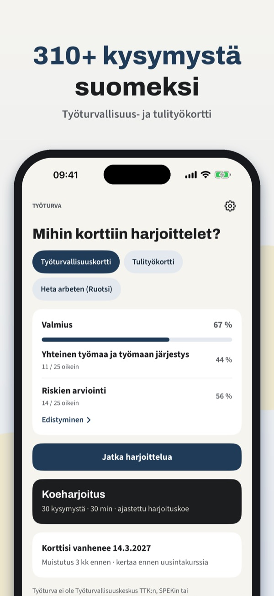
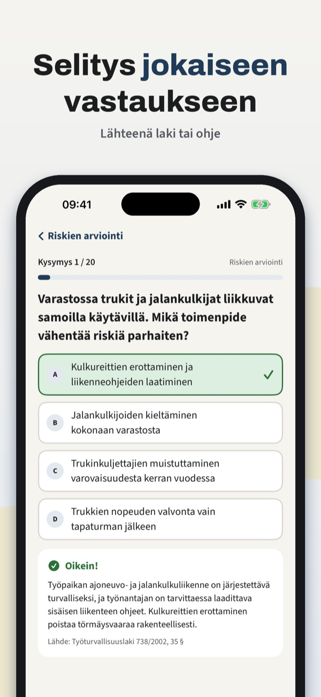
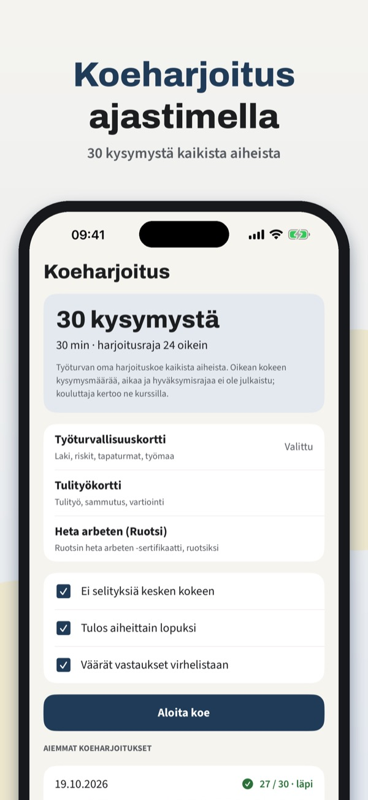
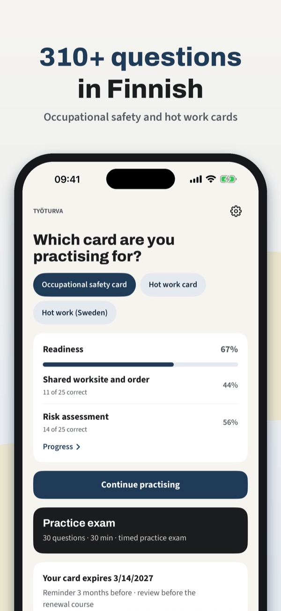
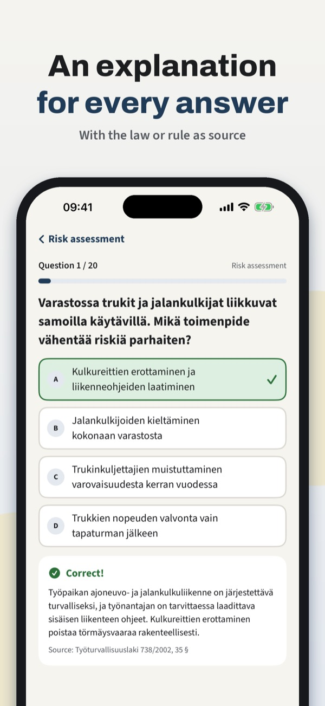
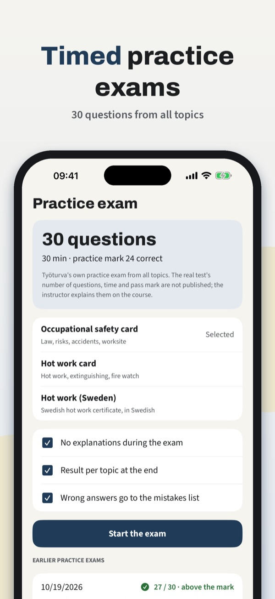
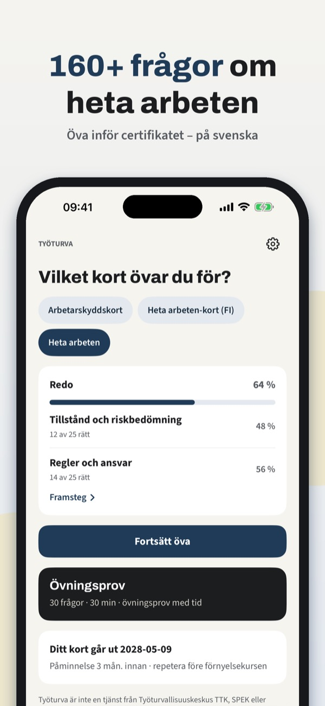
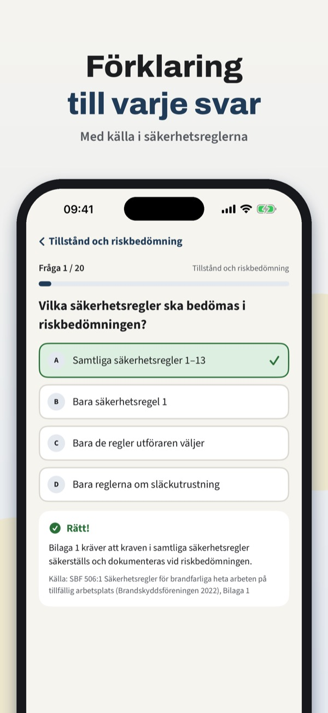
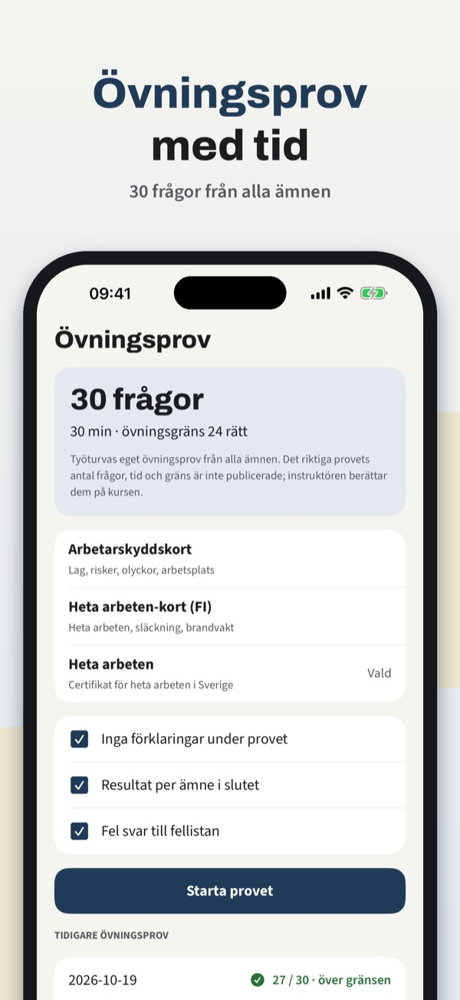

Työturvallisuuskortti-testi



Työturva auttaa valmistautumaan työturvallisuuskortin (TTK) ja tulityökortin kokeisiin suomeksi – ennen kurssia tai ennen kortin uusimista.
Osa kysymyksistä, sanasto ja voimassaolomuistutus ovat käytettävissä ilman ostoa. Kertaosto avaa kaikki kysymykset, koeharjoitukset, virheiden kertauksen ja tilastot. Ei tilausta.
Työturva on itsenäinen harjoitussovellus. Se ei ole Työturvallisuuskeskuksen, SPEKin tai muun kouluttajan sovellus eikä myönnä kortteja; kortin saa vain kouluttajan pitämältä kurssilta. Kysymykset on kirjoitettu itse julkaistujen aihealueiden pohjalta.
Terms of Use (EULA): https://www.apple.com/legal/internet-services/itunes/dev/stdeula/
Privacy: https://baytechbv.github.io/privacy/tyoturva-fi/
Finnish safety card practice



Työturva helps you prepare for the Finnish occupational safety card (työturvallisuuskortti, TTK) and hot work card (tulityökortti) tests – before the course or before renewing your card.
Some of the questions, the glossary and the expiry reminder can be used without a purchase. A one-time purchase unlocks all questions, mock exams, mistake review and statistics. No subscription.
Työturva is an independent practice app. It is not an app of Työturvallisuuskeskus, SPEK or any course provider and does not issue cards; the card is only issued after a course with an instructor. Questions are our own, written from the published topic areas. The questions are in Finnish (safety and hot work card) and Swedish (heta arbeten).
Terms of Use (EULA): https://www.apple.com/legal/internet-services/itunes/dev/stdeula/
Privacy: https://baytechbv.github.io/privacy/tyoturva-fi/
Övningsprov för certifikatet



Työturva hjälper dig att plugga inför provet för heta arbeten – på svenska, före kursen eller innan certifikatet ska förnyas.
En del av frågorna, ordlistan och påminnelsen kan användas utan köp. Ett engångsköp låser upp alla frågor, övningsprov, felrepetition och statistik. Ingen prenumeration.
Työturva är en fristående övningsapp. Den är inte Brandskyddsföreningens app och utfärdar inga certifikat; certifikatet får du bara efter en kurs med behörig instruktör. Frågorna är våra egna och skrivna utifrån de publicerade kursområdena. Appen har även finska frågor för työturvallisuuskortti och tulityökortti.
Terms of Use (EULA): https://www.apple.com/legal/internet-services/itunes/dev/stdeula/
Privacy: https://baytechbv.github.io/privacy/tyoturva-fi/